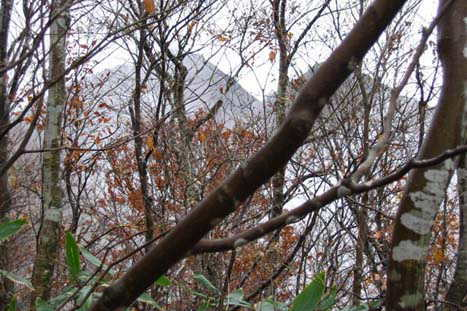

|
|||||||||||||||||||||||||||
|
２００７年 秋の全国集会 （朴坂山・光兎山） |
| 開 催 日 | ２００７年１１月１０〜１１日 | |||
| リーダー | 日出平洋太郎、０７年幹事団 | |||
| 報 告 者 | 西田進、小林義亮 | |||
| 参加者数 | 会員３６名、ゲスト３名 | |||
| アルパインスキークラブ恒例の秋の全国集会は、今年は越後の光兎山登山を 中心として開催された。 第１日目にはオプションとして行なわれた朴坂山登山 の後、懇親会が開催され、久しぶりの再会を楽しんだ。 ２日目は本番の光兎山 登山が行なわれた。 ２日とも生憎の雨天であったが、真っ盛りの紅葉の中の 山歩きを満喫できた。 |
| 朴坂山・山行 |
| 第１日目の１１月１０日は、ＪＲ組とマイカー組が朴坂山登山口で合流して １２：１５にスタートした。 生憎の雨であったが、ほぼ予定したスケジュール で登頂し、その日の宿「高瀬温泉・あらかわ荘」に１６：００頃着いた。 丁度 真っ盛りの紅葉を満喫することが出来た。 |
| A | ||
| JR坂町組は、宿の迎えの マイクロバスで朴坂山登山口へ |
マイカー組みは道の駅「関川」で 合流して、朴坂山登山口へ |
| A | ||
| 登山口にある神社にお参り | 神社からすぐに登山道へ |
| A | ||
| 登山道は大きなホウノキの落ち葉で覆われている。「朴坂山」の謂れが頷かれる。 | ||
| A | ||
| ひたすら登りの１時間半 | 途中、明日登る光兎山が雨の中に望まれた |
 |
A | |
| 紅葉・黄葉が美しい | 足元の紅葉を踏まないように！ |
| A |  |
|
| １時間半のアルバイトで標高４３８．８ｍの三角点のある山頂に着く。日本一標高の低い一等三角点とか | 三角点の横に、関川村村長の平田大六さん からの差し入れのビールを発見！ |
| 早速みんなで乾杯！ |
| 山頂の近くの祠の前の広場で記念写真 |
| 懇 親 会 |
| 「高瀬温泉・あらかわ荘」の湯で登山の疲れを癒した後、懇親会に先立って、スキー技術向上委員会の高尾さんの「シール歩行・登高の姿勢」のビデオが上映された。 このビデオは、例会に出席し難い地方会員には、例会の様子が分ると好評であった。 懇親会は、沢山な越後の銘酒の差し入れがあり、福井から参加の女性会員も多く、和やかな懇親が夜遅くまで続いた。 |
| 懇親会に先立って、１０月の例会で発表されたスキー技術向上委員会の高尾さんの「シール歩行・登高の姿勢」のビデオが上映された 上の写真をクリックするとビデオをご覧になれます |
| 今年度の幹事団の揃い踏み、 地元幹事の早川（英）さんと田邊さんが挨拶 |
| A | ||
| アルパインスキークラブ会長 宮本さんの挨拶 |
関川村村長で、日本山岳会越後支部長の平田大六さんの挨拶 |
| 楽しい懇親会は夜遅くまで続く |
| 懇親会に先立って撮影した記念写真 |
| 光兎山・山行 |
| ２日目は、５：３０起床、朝食を済ませ６:００過ぎには光兎山を目指して宿を出発した。 生憎の雨の中で帰路の時間的制約のため光兎山山頂（966m）まで行くことができず、雷峰で引き返したが、雨中の紅葉を楽しむことが出来た。 |
| A | ||
| これから辿る稜線が見えてきた |
地元の日本山岳会会員の横山さんから光兎山にまつわる話を聞く |
| A |  | |
| 虚空蔵峰の標識 寛政の古銭が歴史を物語る |
ガスの間に雷峰と本峰が現れる |
| A | ||
| 紅葉する木々 下には雪椿の群生 | 行く手に雷峰 |
| A | ||
| 雷峰から望む光兎山本峰 | 日本海方面から冬型の雲が来る |
| 残念ながら天候が悪いので、光兎山本峰の登頂は諦め、雷峰で記念写真を撮る |
| ２００７年度の秋の全国集会は、日本山岳会越後支部並びに関川村の皆さんの暖かい歓迎を受けて、楽しく実施することが出来た。 |